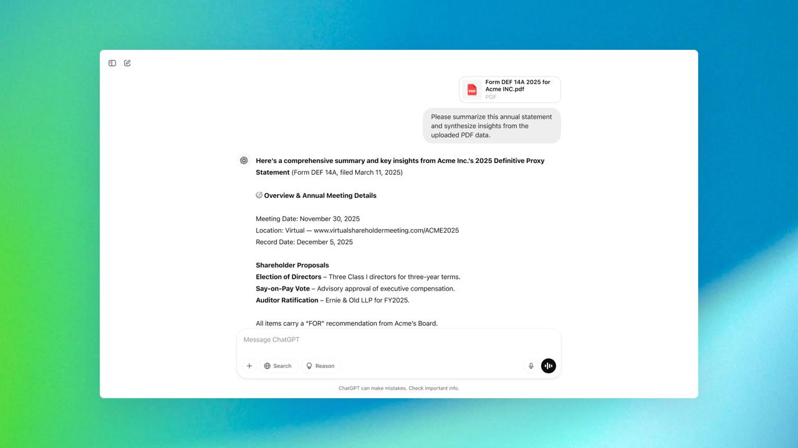
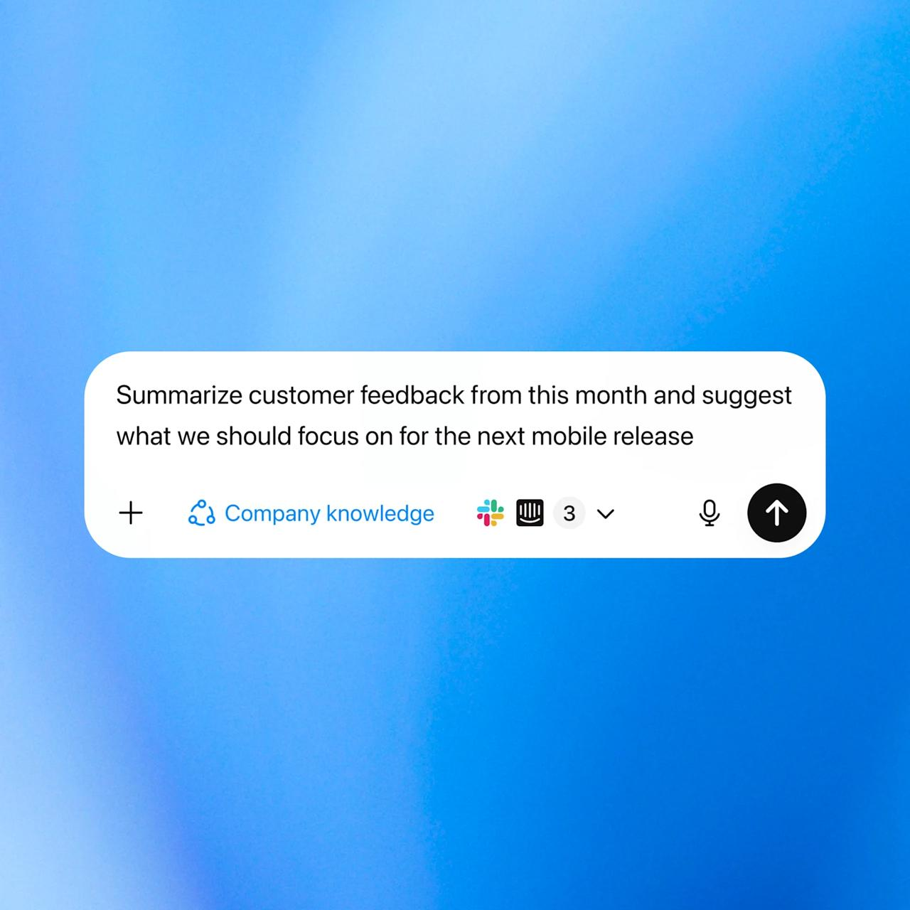
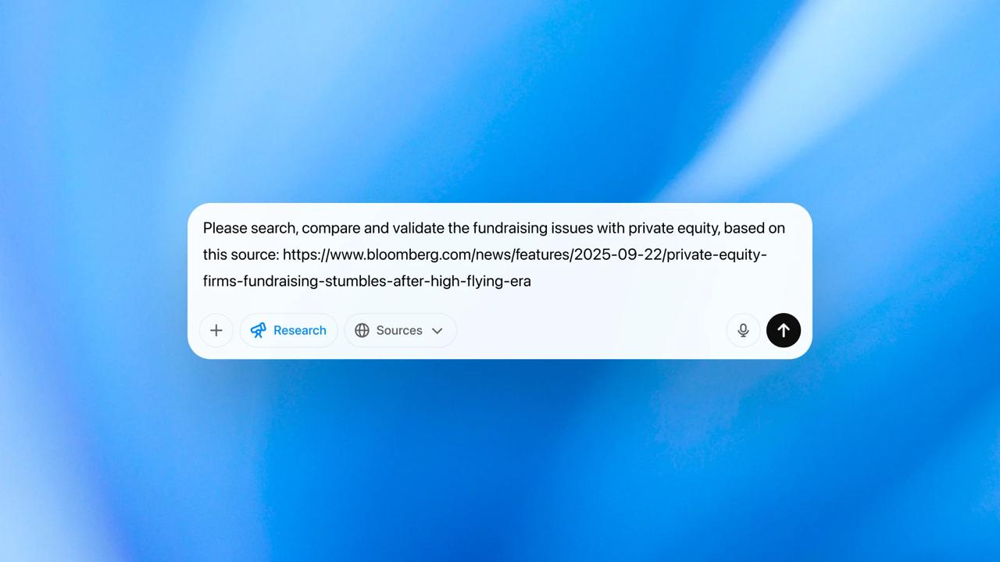
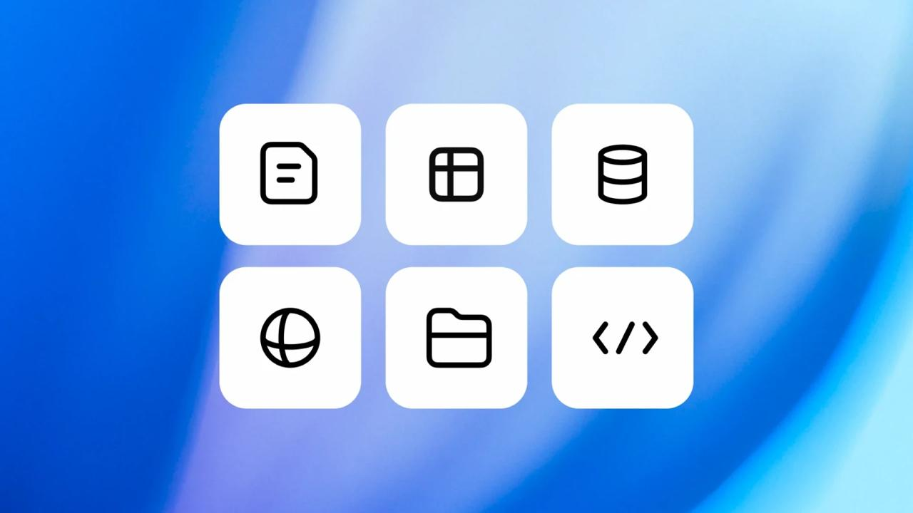

ChatGPT
Tu asistente de investigación en el chat.
- Efectúa revisiones de literatura, resume artículos o sintetiza ideas de archivos PDF y datos cargados.
- Referencia las fuentes directamente y exporta notas estructuradas al instante.
OpenAI para la investigación
Reúne, analiza y sintetiza información más rápido con herramientas de IA que generan informes estructurados y con citas en minutos, no en días.

Compara productos que respaldan la investigación en todos los niveles, desde la exploración rápida hasta la elaboración de informes detallados.

Tu asistente de investigación en el chat.

Investigación avanzada para preguntas complejas en ChatGPT.

Respuestas con citas en tiempo real.